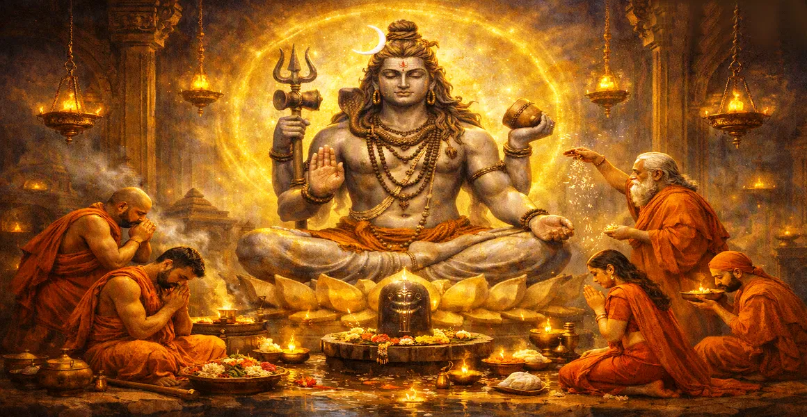

पूजा के लिए शिव की मूर्ति
कैलास संहिता के पंद्रहवें अध्याय में भगवान शिव की पूजा के लिए निर्धारित विभिन्न भौतिक रूपों, लिंगों और पवित्र मूर्तियों का विवरण दिया गया है।
ऋषि सुता बताते हैं कि कैसे मूर्त प्रतिनिधित्व भक्तों को उनकी भक्ति पर ध्यान केंद्रित करने और पवित्र प्रतीकों के माध्यम से निराकार पूर्ण से जुड़ने में मदद करते हैं।
यह अध्याय पारंपरिक पूजा में उपयोग की जाने वाली विभिन्न सामग्रियों और रूपों के महत्व को समझने में साधकों का मार्गदर्शन करता है।
अध्याय 15 की मुख्य बातें
पवित्र रूप
पूजा के लिए उपयुक्त भगवान शिव की विभिन्न भौतिक अभिव्यक्तियों और प्रतीकों का विवरण।
लिंग का महत्व
बताते हैं कि क्यों शिवलिंग को निराकार अनंत के सर्वोच्च प्रतीक के रूप में प्रतिष्ठित किया जाता है।
मूर्तियों के लिए सामग्री
मूर्तियों को बनाने में उपयोग किए जाने वाले पत्थर, धातु, क्रिस्टल और मिट्टी जैसे पवित्र पदार्थों की रूपरेखा।
भक्ति फोकस
यह दर्शाता है कि कैसे शारीरिक पूजा मन को शुद्ध करती है और हृदय को उच्च प्राप्ति के लिए तैयार करती है।
दिव्य अभिषेक
उन पवित्र अनुष्ठानों का वर्णन करता है जो भौतिक मूर्तियों को दिव्य ऊर्जा से भर देते हैं।
शिव के सिद्धांत के लिए पुल
अध्याय 16 में साधक को शिव के परम दार्शनिक सिद्धांत की खोज के लिए तैयार किया गया है।
इस अध्याय में मुख्य विषय
शिव की भौतिक अभिव्यक्तियाँ और प्रतीक
ऋषि सुता बताते हैं कि यद्यपि भगवान शिव अंततः निराकार और पारलौकिक हैं, फिर भी वे भक्तों पर दया करने के लिए विभिन्न भौतिक रूपों और प्रतीकों को धारण करते हैं।
ये प्रतीक मूर्त केंद्र बिंदु के रूप में कार्य करते हैं, जो मानव चेतना को दिव्य वास्तविकता से जुड़ने में सक्षम बनाते हैं।
शिवलिंग की परम महिमा
पूजा के सभी रूपों में, शिवलिंग सर्वोच्च स्थान रखता है क्योंकि यह स्वर्ग और पृथ्वी को जोड़ने वाले प्रकाश के लौकिक स्तंभ का प्रतिनिधित्व करता है।
यह अव्यक्त निरपेक्ष (निर्गुण) और प्रकट सृष्टि (सगुण) दोनों को एक ही सामंजस्यपूर्ण प्रतीक में प्रस्तुत करता है।
मूर्तियाँ बनाने के लिए पवित्र सामग्री
अध्याय में मूर्तियों और लिंगों को बनाने के लिए निर्धारित विभिन्न पदार्थों की रूपरेखा दी गई है, जिनमें कीमती रत्न, धातु, नक्काशीदार पत्थर, पकी हुई मिट्टी और अस्थायी सामग्री शामिल हैं।
प्रत्येक सामग्री में विशिष्ट आध्यात्मिक शक्तियाँ होती हैं और विभिन्न प्रकार की भक्ति प्रथाओं के लिए उपयुक्त होती हैं।
अभिषेक और आह्वान के अनुष्ठान
उचित स्थापना और अभिषेक पत्थर या धातु में आध्यात्मिक जीवन फूंकता है, जिससे यह दैवीय कृपा के जीवित मंदिर में बदल जाता है।
मंत्र और प्रसाद भक्त की पूजा के लिए मूर्ति में महादेव की जीवित उपस्थिति का आह्वान करते हैं।
बाह्य पूजा का आध्यात्मिक उद्देश्य
बाहरी पूजा मन के लिए एक प्रशिक्षण भूमि के रूप में कार्य करती है, जो भावनात्मक और संवेदी ऊर्जा को परमात्मा की ओर ले जाती है।
जैसे-जैसे भक्ति गहरी होती है, बाहरी अनुष्ठान स्वाभाविक रूप से आंतरिक ध्यान और निरंतर संवाद में विकसित होते हैं।
समर्पित उपासना का फल
ऋषि सुता कहते हैं कि शिव की मूर्ति की ईमानदारी से पूजा करने से कर्म संबंधी अशुद्धियाँ शुद्ध होती हैं, मानसिक शांति मिलती है और आध्यात्मिक विकास होता है।
भक्त धीरे-धीरे सांसारिक सीमाओं को पार कर जाता है और सर्वोच्च चेतना में लीन हो जाता है।
अध्याय 16 की ओर
अध्याय 15 में भौतिक मूर्तियों और पूजा के रूपों की व्याख्या करने के बाद, ऋषि सुता ने अध्याय 16, 'शिव के सिद्धांत' का परिचय दिया।
अध्याय 16 शिव की दिव्य वास्तविकता के सर्वोच्च सत्तामूलक सत्य और दार्शनिक आधार पर प्रकाश डालता है।
अध्याय 15 की मुख्य शिक्षाएँ
दयालु रूप
निराकार भगवान अपने भक्तों का प्यार पाने के लिए मूर्त आकार लेते हैं।
सर्वोच्च लिंग
शिवलिंग सृजन और प्रलय को जोड़ने वाला परम प्रतीक है।
पवित्र सामग्री
विभिन्न पवित्र पदार्थ दिव्य उपस्थिति के लिए उपयुक्त पात्र के रूप में काम करते हैं।
मन शुद्धि
अनुष्ठान पूजा भावनाओं को शुद्ध करती है और अशांत बुद्धि को शांत करती है।
जीवित तीर्थ
उचित आह्वान पत्थर की मूर्ति को महादेव की जीवंत कृपा से भर देता है।
बुद्धि की ओर कदम
बाहरी भक्ति पूर्ण प्राप्ति की दिशा में एक सीढ़ी के रूप में कार्य करती है।
आध्यात्मिक चिंतन
जब हम पवित्र शिवलिंग के सामने झुकते हैं, तो हम न केवल पत्थर या धातु का सम्मान करते हैं, बल्कि प्रकाश के उस अनंत, अनिर्मित स्तंभ का भी सम्मान करते हैं जो पूरे ब्रह्मांड को बनाए रखता है। प्रत्येक फूल और भेंट आत्मा के परमात्मा के प्रति समर्पण की अभिव्यक्ति है।
अध्याय 15 का संदेश जीना
अपनी दैनिक पूजा को श्रद्धा के साथ करें, मूर्ति या लिंग को अनुग्रह की जीवंत अभिव्यक्ति के रूप में देखें।
अपने कार्यों, विचारों और भक्ति को भगवान शिव को अर्पित करें, नियमित जीवन को पवित्र अनुष्ठान में बदलें।
बाहरी प्रतीकों को आपको अपने हृदय में निवास करने वाली निराकार, अनंत उपस्थिति की याद दिलाने दें।
प्रमुख आध्यात्मिक अवधारणाएँ
शिव के भौतिक स्वरूपों एवं मूर्तियों के पीछे का दार्शनिक सिद्धांत।
शिवलिंग की पवित्र अनुष्ठान स्थापना और अभिषेक।
भक्तिपूर्ण पूजा ईश्वर के प्रकट गुणों की ओर निर्देशित होती है।
पवित्र चिह्नों को तैयार करने में उपयोग की जाने वाली सामग्रियों की आध्यात्मिक शुद्धता।
समर्पित अनुष्ठान पूजा के माध्यम से मानसिक क्षमताओं की शुद्धि।
अध्याय 16 में शिव के सिद्धांत को समझने की दिशा में प्रबुद्ध परिवर्तन।
अध्याय सारांश
कैलाश संहिता अध्याय 15 पूजा के लिए शिव की मूर्ति प्रस्तुत करता है। भौतिक अभिव्यक्तियों, शिवलिंग की सर्वोच्च महिमा, और मूर्तियों के लिए पवित्र सामग्रियों और अभिषेक अनुष्ठानों का विवरण देते हुए, यह अध्याय बाहरी पूजा को आंतरिक भक्ति के साथ जोड़ने में भक्तों का मार्गदर्शन करता है। यह अध्याय 16, 'शिव का सिद्धांत' के लिए मार्ग प्रशस्त करता है, जो परमात्मा की परम सत्तावादी वास्तविकता की खोज करता है।
अक्सर पूछे जाने वाले प्रश्न
1. कैलास संहिता अध्याय 15 का प्राथमिक विषय क्या है?
अध्याय 15 में भगवान शिव की पूजा के लिए निर्धारित विभिन्न भौतिक रूपों, लिंगों और मूर्तियों का विवरण दिया गया है।
2.शिवलिंग की पूजा को सर्वोच्च क्यों माना जाता है?
शिवलिंग भगवान शिव के प्रकाश और ऊर्जा के निराकार, अनंत ब्रह्मांडीय स्तंभ का प्रतिनिधित्व करता है, जो प्रकट और अव्यक्त दोनों ब्रह्मांड को समाहित करता है।
3. शिव की मूर्तियाँ या लिंग बनाने के लिए कौन सी सामग्री की सिफारिश की जाती है?
भक्त की क्षमता और परंपरा के आधार पर, लिंग कीमती धातुओं, पत्थर, मिट्टी, क्रिस्टल या पवित्र राख या रेत जैसी अस्थायी सामग्री से भी बनाए जा सकते हैं।
4. अध्याय 15 पिछले अध्याय से कैसे जुड़ता है?
जबकि अध्याय 14 शिव के रूप में प्रणव के ध्वनि रूप की पड़ताल करता है, अध्याय 15 मूर्त भौतिक अभ्यावेदन और दैनिक पूजा में उपयोग की जाने वाली मूर्तियों में परिवर्तन करता है।
5. उचित मूर्तियों के माध्यम से शिव की पूजा करने का आध्यात्मिक फल क्या है?
यह हृदय को शुद्ध करता है, भटकते मन को केंद्रित करता है, दैवीय कृपा का आह्वान करता है और भक्त को आध्यात्मिक पूर्णता की ओर ले जाता है।
6. अध्याय 15 के बाद नेविगेशन के लिए अगला अध्याय कौन सा है?
नेविगेशन के लिए अगला अध्याय अध्याय 16 है, जिसका शीर्षक 'शिव का सिद्धांत' है।
"लिंग के प्रतिष्ठित प्रतीक के माध्यम से, सीमित साधक भगवान शिव की अनंत उपस्थिति को छूता है।"
कैलाश संहिता के माध्यम से जारी रखें
अध्याय 15 पूजा के लिए शिव की मूर्ति का विवरण। अध्याय 16, शिव का सिद्धांत जारी रखें।